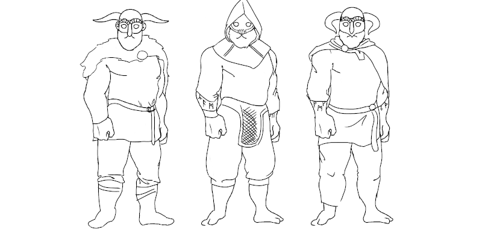
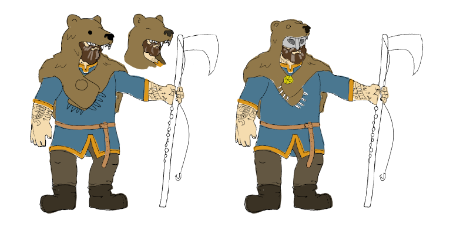
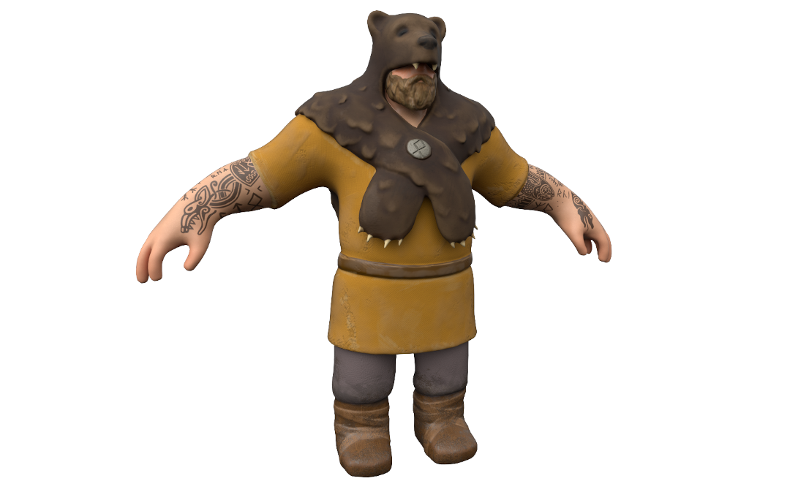

Dev Blogs
The Making of a Warrior
How Cast Iron Games made Fiskur’s one and only Viking
Feared warriors with impenetrable armor and horned helmets. Everyone thinks they know the Vikings and their legacy; but only some of the mainstream Viking portrayal is true. Vikings were indeed feared and battle-hardened warriors, but they were also skilled farmers and hunters. Vikings weren’t the savages western history portrays them to be. They had structured societies, religion, good hygiene and practical yet deliberate fashion choices. Wearing wool, linen, and animal skins, our character is a fisherman, a common role.
 We shrouded our player character in a pelt to keep him warm in the harsh climate, but also to minimize his specific facial features – we are him in this third person experience. The bear’s pelt was chosen because of the similarities between the bear and our character: burly, strong, and from the north. A silver brooch keeps the arms of the bear together and on our character’s back. The Othala rune is carved into the brooch. Othala takes on many meanings, one of which is “the love for one’s home”, which is ultimately what drives our Viking to fight through each night. Tattoos of ships, serpents, and other Viking imagery fill his arms providing visual interest (and cultural flair for those in the know). His clothes, dyed a traditional yellow and showing some wear and tear, stand out from the surrounding cold environment. In the end, we wanted our character to be an authentic Viking, not a stereotype. Through the research and design choices, we have achieved that goal while also making an engaging vicarious experience.
Click to read more!
The Mind of the Enemy
Navigation and Pathfinding
Each time night falls, FISKUR’s enemies must effectively and independently navigate throughout the island seeking out the player and the altar. While artificial intelligence is fairly complex, Unity has a navigation system that allows us to create characters that can intelligently move around the island using navigation meshes that are created from the scene’s geometry. To further understand Unity’s navigation system, we’ll provide a brief rundown of what consists in this system:
- ● NavMesh is a data structure that describes walkable surfaces in the game world and allows the Navmesh Agent to find a path.
- ● NavMesh Agent is a component that helps create characters which avoid each other while moving towards their goal.
- ● Off-Mesh Link is a component that allows navigation shortcuts that can’t represented on a walkable surface. For example, allowing a character to jump to another surface.
- ● NavMesh Obstacle is a component that allows you to describe obstacles the agents should avoid while navigating.
Click to read more!